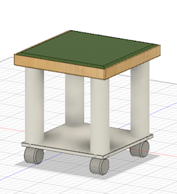
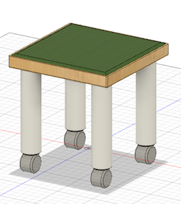

学校に設置したいと多くの人が共感できるものを
プロトタイピングする
共感をしてもらうには？
みんなが共通して感じている「不便さ」を解決するものを作ればいいかなと考えた
学校にあって現在不便だなと感じるモノやコト
・学生証
・カフェのドア（どこから入ればいいのか分かりにくい）
・学食を買うために並ぶ列
・学食の椅子が引きにくい
・（椅子に座って）くつろげるスペースがあんまりない
［初期コンセプト］
学校生活における不便さを今、学校にあるものを生かして解消する
［初期アイデア］
・学生証に電子マネーをつけ、学内のショップや学食、カフェなどで利用できるようにする
そして、学内にチャージ機を設置する
『たたみイス』
＜コンセプト＞
①作った動機・解決したい大きな問題
1日の大半を教室で過ごすのにくつろげるスペースの選択肢が少なく、教室内でキャスターイス以外に座ってくつろげるものがない。
決まった姿勢で長時間過ごしがちになり、しんどい。
↓
休憩・気分転換のためのちょっとしたくつろぎスペースが欲しい
②大きな問題に対しての自身の仮説
・くつろげるスペースがあまりない
・座れるものがキャスターイス以外無い
↓
くつろぎスペースを作り出せるイスを作ればいいのでは？
③仮説に対しての具体的なアプローチ
・くつろいでいないと感じるとき（普段の状態）
→キャスターイスに座ってモニターと向き合い、姿勢は固定される
・自分がくつろいでいると感じるとき
→たたみやカーペットで、好きなタイミングで好きな姿勢を自由にとれる
だけど、教室にたたみやカーペットを設置したりすると掃除・通行の邪魔になったりするので
→キャスターイスとたたみを掛け合わせることで、「移動するくつろぎスペース」を実現するイスを作る
［たたみイスのイメージ］

[構造の簡易説明]
→上にはたたみ風クッション、足にはキャスターがつき、イスの側面には磁石が埋め込まれている
椅子が１つの時は、普通に椅子として使い、２つの時は繋げることで、簡易的なベンチになる
４つ以上組み合わせると座ってくつろげるミニスペースに
キャスターはストッパーあり、下のスペースには荷物を置ける
［イメージしたサイズ］
座面の厚み：60mm
座面の幅：560mm
差尺：300mm
脚の直径：25mm
＜コンセプト＞
教室に休憩・気分転換のためのちょっとしたくつろぎスペースを、手軽に実現する椅子です
＜レビューを終えて＞
デザインがダサいなと思ったので、ひとまず下のスペースにあった板を無くしました
